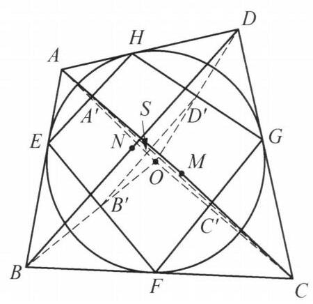

103 例 8：外切四边形反演与调和四边形
103.1 题目
设凸四边形 {ABCD} 外切于一个圆 O ，且已知 {OA} = 5,{OB} = 6,{OC} = 7 ， {OD} = 8 . 记线段 {AC} ， {BD} 的中点分别为 M ， N . 求 \frac{OM}{ON} 的值.

图 7-7
103.2 参考解答
如图 7-7，设四边形 {ABCD} 与圆 O 的切点分别为 E, F, G, H. 以 O 为反演中心，圆 O 为反演基圆作反演变换. 设 A, B, C, D 的反演点分别为 {A}^{\prime },{B}^{\prime },{C}^{\prime },{D}^{\prime } ,则 {A}^{\prime },{B}^{\prime },{C}^{\prime },{D}^{\prime } 分别为 {HE},{EF},{FG},{GH} 的中点,故
{A}^{\prime }{B}^{\prime }\not{= }\frac{1}{2}{FH}\not{= }{C}^{\prime }{D}^{\prime },
{A}^{\prime }{D}^{\prime } \text{ ⫫ } \frac{1}{2}{EG} \text{ ⫫ } {B}^{\prime }{C}^{\prime }.
所以 {A}^{\prime }{C}^{\prime } 与 {B}^{\prime }{D}^{\prime } 互相平分,设其交点为 S .
设圆 O 的半径为 r ,由 B,{B}^{\prime } 互为反演点,知
{OB} \cdot O{B}^{\prime } = {r}^{2}.
同理可得 {OD} \cdot O{D}^{\prime } = {r}^2 ,于是 {OB} \cdot O{B}^{\prime } = {OD} \cdot O{D}^{\prime } ,即 \frac{O{B}^{\prime }}{O{D}^{\prime }} = \frac{OD}{OB} . 所以 \triangle {B}^{\prime }O{D}^{\prime } \backsim \triangle {DOB} . 又因为 S 为 {B}^{\prime }{D}^{\prime } 的中点, N 为 {BD} 的中点,所以
\frac{ON}{OS} = \frac{OB}{O{D}^{\prime }} = \frac{OB}{\frac{{r}^2}{OD}} = \frac{{OB} \cdot {OD}}{{r}^2}.
同理有 \frac{OM}{OS} = \frac{{OA} \cdot {OC}}{{r}^2} .
故
\frac{OM}{ON} = \frac{{OA} \cdot {OC}}{{OB} \cdot {OD}} = \frac{35}{48}.
注: 利用反演前后的相似比的表达式表示出 {OM},{ON} 的长度,进而得到答案.
103.3 解题思路与分析
这个证明之所以让人觉得“费解”甚至有些“像变魔术”，是因为教材采用的是从结果倒推回去的“综合法”书写顺序——它一上来就抛出反演变换，直到最后一步才揭晓底牌。如果按照解题者真实的逆向探索过程（分析法）来拆解，它的诞生其实依托于三个非常经典的几何思维模块：
103.3.1 一、 破题痛点：条件与结论是“割裂”的
我们先看题目已知什么、求什么： 1. 已知条件：OA, OB, OC, OD 的长度（顶点到圆心的距离），以及四边形 ABCD 外切于圆 O。注意：题目甚至没有给出圆 O 的半径 r！这说明最终的比值 \frac{OM}{ON} 与半径 r 无关，一定在某个比例式中把 r 约掉了。 2. 所求目标：对角线 AC 的中点 M 与 BD 的中点 N 到圆心 O 的距离之比 \frac{OM}{ON}。
思维卡点在哪里？ * 在 \triangle OAC 中，OM 是中线；在 \triangle OBD 中，ON 是中线。虽然已知两边 OA, OC 和 OB, OD，但不知道夹角 \angle AOC 和 \angle BOD（或者对角线 AC, BD 的长），无法直接用中线长公式算出 OM 和 ON。 * 更麻烦的是，在原图中，M 和 N 是两个彼此孤立的点。要想在算不出具体长度的情况下求出 \frac{OM}{ON}，必须找到一个公共的“桥梁”（中介量），把 OM 和 ON 同时与这个桥梁挂钩。
103.3.2 二、 思维破局的三个核心步骤
103.3.2.1 第一步：看到“圆外切多边形 + 到圆心的距离”，条件反射想到【极线与反演】
在圆的几何中，“外切四边形 ABCD”是一个很难直接利用的条件，因为顶点 A, B, C, D 都在圆外且不共圆。但它的切点 E, F, G, H 都在圆 O 上，构成了一个圆内接四边形 EFGH。
如何把圆外的顶点 A, B, C, D 转化为切点四边形 EFGH 上的点？这是平面几何中最标准的基本构型（母题）： * 从圆外一点 A 向圆 O 作两条切线 AE, AH，连结切点弦 EH，设 OA 交 EH 于 A'。 * 由垂径定理和射影定理，立刻有 A' 是弦 EH 的中点，且满足： OA \cdot OA' = OE^2 = r^2 * 这意味着：以圆 O 为基圆作反演变换，外切四边形的四个顶点 A, B, C, D 的反演点 A', B', C', D'，恰好就是切点四边形 EFGH 四条边的中点！
同时，题目给出的条件恰恰是 OA, OB, OC, OD 的长度，经过反演关系 OA' = \frac{r^2}{OA} 后，所有的长度条件都能无损地转移到 A', B', C', D' 上。
103.3.2.2 第二步：神来之笔——用【瓦里尼翁定理】将“双中点”合二为一
把问题转化到 A', B', C', D' 之后，奇迹发生了： 既然 A', B', C', D' 分别是四边形 EFGH 四条边 HE, EF, FG, GH 的中点，根据初中几何著名的瓦里尼翁定理（Varignon’s Theorem，任意四边形四边中点顺次连结必构成平行四边形），利用三角形中位线定理： A'B' \parallel \frac{1}{2}FH \parallel C'D', \quad A'D' \parallel \frac{1}{2}EG \parallel B'C' 且长度相等，因此四边形 A'B'C'D' 必然是一个平行四边形！
平行四边形最大的性质是什么？对角线互相平分！ * 在原四边形 ABCD 中，对角线 AC 的中点 M 和 BD 的中点 N 是分开的两个点； * 而在反演后的平行四边形 A'B'C'D' 中，对角线 A'C' 的中点与 B'D' 的中点重合为了同一个点 S！
这就是解题者梦寐以求的“公共桥梁”！ 只要能找出原对角线中点（M 或 N）与反演后对角线中点 S 之间的长度关系，就能用同一个 OS 把 OM 和 ON 串联起来。
103.3.2.3 第三步：利用【反演逆相似三角形】建立中线之比
现在的任务只剩最后一个：已知 A, C 的反演点是 A', C'，且 M 是 AC 中点，S 是 A'C' 中点，如何求 \frac{OM}{OS}？
注意：中点的反演点并不是反演点的中点（即 M 和 S 互不为反演点）。但反演变换有一条最基础的保相似性质——逆相似（反相似）： * 因为 OA \cdot OA' = OC \cdot OC' = r^2，所以 \frac{OA'}{OC} = \frac{OC'}{OA}。 * 加上公共角 \angle A'OC' = \angle COA，直接得到 \triangle A'OC' \sim \triangle COA（注意顶点对应顺序是反过来的）。
既然两个三角形相似，那么它们对应边上的中线之比，就等于相似比！ * \triangle COA 中，CA 边上的中线是 OM； * \triangle A'OC' 中，A'C' 边上的中线是 OS； * 因此，中线之比等于对应边之比： \frac{OM}{OS} = \frac{OA}{OC'} = \frac{OA}{\frac{r^2}{OC}} = \frac{OA \cdot OC}{r^2} 同理，在 \triangle BOD 与 \triangle D'OB' 中： \frac{ON}{OS} = \frac{OB \cdot OD}{r^2} 两式相除，未知的中介长度 OS 和未知的半径 r^2 同时被完美约去，直接得出： \frac{OM}{ON} = \frac{OA \cdot OC}{OB \cdot OD}
103.3.3 三、 降维视角：从“向量与复数”看穿这个证明的代数本质
如果你觉得上面的纯几何构造依然有些“巧合”，我们可以用向量与复数把它的底层代数逻辑彻底扒开。你会发现，书上的几何证明其实只是把下面两行极其自然的代数恒等式“翻译”成了几何语言：
为什么会出现公共中点 S？（向量对称性） 以圆心 O 为原点。因为 A' 是切点弦 HE 的中点，所以向量 \overrightarrow{OA'} = \frac{1}{2}(\overrightarrow{OH} + \overrightarrow{OE})。同理 \overrightarrow{OC'} = \frac{1}{2}(\overrightarrow{OF} + \overrightarrow{OG})。 那么 A'C' 的中点 S 满足： \overrightarrow{OS} = \frac{\overrightarrow{OA'} + \overrightarrow{OC'}}{2} = \frac{\overrightarrow{OE} + \overrightarrow{OF} + \overrightarrow{OG} + \overrightarrow{OH}}{4} 你看，右边关于四个切点 E, F, G, H 是完全对称的！所以 B'D' 的中点算出来也必然是 \frac{1}{4}(\overrightarrow{OE} + \overrightarrow{OF} + \overrightarrow{OG} + \overrightarrow{OH})。这就是瓦里尼翁平行四边形在代数组合上的本质。
为什么 \frac{OM}{OS} = \frac{OA \cdot OC}{r^2}？（复数求倒数通分） 在复平面上，以原点 O 为中心、半径为 r 的反演变换，对应的复数关系是 z' = \frac{r^2}{\bar{z}}（其中 \bar{z} 为共轭复数）。 设点 A, C, M, S 对应的复数分别为 a, c, m, s。因为 M 是 AC 中点，所以 m = \frac{a+c}{2}；因为 S 是 A'C' 中点，所以： s = \frac{a' + c'}{2} = \frac{1}{2}\left(\frac{r^2}{\bar{a}} + \frac{r^2}{\bar{c}}\right) = \frac{r^2(\bar{a} + \bar{c})}{2\bar{a}\bar{c}} = \frac{r^2 \cdot \bar{m}}{\bar{a}\bar{c}} 对两边直接取模长（即到原点 O 的距离），利用 |\bar{m}| = |m| = OM，瞬间得到： OS = \frac{r^2 \cdot OM}{OA \cdot OC} \implies \frac{OM}{OS} = \frac{OA \cdot OC}{r^2}
你看，在复数运算里，“利用逆相似三角形转换中线”本质上就只是一个简单的分式通分 \frac{1}{a} + \frac{1}{c} = \frac{a+c}{ac}！命题人正是抓住了 \frac{1}{a} + \frac{1}{c} 通分后分子恰好会出现 a+c（对应中点 M），而分母恰好是 ac（对应已知条件 OA \cdot OC），才将其包装成了这道经典的纯几何反演题。
103.4 分步证明
103.4.1 步骤 0：已知构型与核心待求线段
设凸四边形 ABCD 外切于圆 O，OA=5, OB=6, OC=7, OD=8。对角线 AC, BD 的中点分别为 M, N。求 \frac{OM}{ON} 的值。
103.4.2 步骤 1：① 建立以 O 为中心、半径 r 的反演变换
以 O 为反演中心、圆 O 为基圆（反演幂 r^2）作反演变换。各顶点反演像 A', B', C', D' 落在射线 OA, OB, OC, OD 上，满足 OA \cdot OA' = OB \cdot OB' = OC \cdot OC' = OD \cdot OD' = r^2。
103.4.3 步骤 2：② 证明 A'B'C'D' 为切点中位线平行四边形
由切线直角射影性质，A', B', C', D' 分别为切点弦的中点。由三角形中位线定理，A'B' \parallel C'D' 且 A'B' = C'D' = \frac{1}{2}HF。因此 A'B'C'D' 严格为一个平行四边形！其对角线互相平分于公共中点 S。
103.4.4 步骤 3：③ 相似三角形中线比：表达 OM
由反演性质知 \triangle A'OC' \sim \triangle COA（反向相似）。线段 OS 与 OM 分别是两相似三角形对应的中线，故对应中线比等于对应边长比：\frac{OS}{OM} = \frac{OA'}{OC} = \frac{r^2}{OA \cdot OC}，解得 OM = \frac{OS \cdot OA \cdot OC}{r^2}。
103.4.5 步骤 4：④ 相似三角形中线比：表达 ON
同理，在另一对对角线构成的三角形中，\triangle B'OD' \sim \triangle DOB。OS 与 ON 为对应中线，满足：\frac{OS}{ON} = \frac{OB'}{OD} = \frac{r^2}{OB \cdot OD}，解得 ON = \frac{OS \cdot OB \cdot OD}{r^2}。
103.4.6 步骤 5：⑤ 比值消元，得出最终精确值 \frac{35}{48}
将两式相除，公共未知量 OS 与反演基圆幂 r^2 完全对消： \frac{OM}{ON} = \frac{\frac{OS \cdot OA \cdot OC}{r^2}}{\frac{OS \cdot OB \cdot OD}{r^2}} = \frac{OA \cdot OC}{OB \cdot OD} = \frac{5 \times 7}{6 \times 8} = \frac{35}{48} 最终得解：\frac{OM}{ON} = \frac{35}{48}！